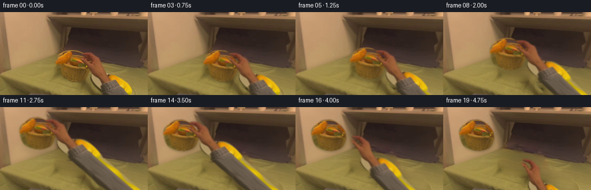
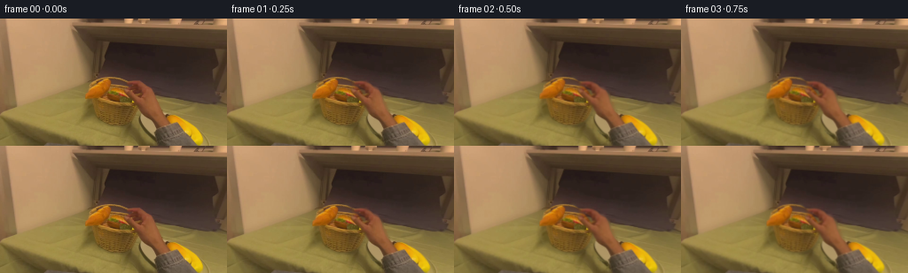

CODING AGENTS AS PIXEL WORLD MODELS
traex/GPT-6.1-Sol · common50_0019
点击播放 · 原生 RGB 像素
逐轮保存的候选
回放视频、检查图与代码变化。
每份候选均可单独播放。实际图片检查记录在下方工具轨迹中。
候选 01播放与检查图
点击播放 · 原生 RGB 像素


展开代码变化
--- 上一保存版本
+++ 本次保存版本
@@ -0,0 +1,224 @@
+from pathlib import Path
+import numpy as np
+from PIL import Image, ImageDraw, ImageFilter
+import cv2
+from scipy import sparse
+from scipy.sparse.linalg import spsolve
+import artifact_io
+
+ROOT=Path(__file__).resolve().parent
+W,H=256,144
+EW,EH=360,260
+SOURCE=np.array(Image.open(ROOT/'first_frame.png').convert('RGB'))
+
+
+def contour(points, size=(EW,EH), blur=.55):
+ ss=4
+ m=Image.new('L',(size[0]*ss,size[1]*ss))
+ d=ImageDraw.Draw(m)
+ # Smooth the traced perimeter with a centripetal-looking cubic interpolation.
+ p=np.array(points,dtype=float)
+ curve=[]
+ for i in range(len(p)):
+ a,b,c,e=p[(i-1)%len(p)],p[i],p[(i+1)%len(p)],p[(i+2)%len(p)]
+ for t in np.linspace(0,1,8,endpoint=False):
+ v=.5*((2*b)+(-a+c)*t+(2*a-5*b+4*c-e)*t*t+(-a+3*b-3*c+e)*t*t*t)
+ curve.append(tuple(v*ss))
+ d.polygon(curve,fill=255)
+ m=m.resize(size,Image.Resampling.LANCZOS)
+ if blur:m=m.filter(ImageFilter.GaussianBlur(blur))
+ return np.array(m).astype(np.float32)/255
+
+burger_points=[(96,85),(100,77),(108,71),(115,67),(123,65.9),(132,66.5),
+ (139,70),(145,75),(151,82),(155,90),(155.7,101),(151.5,111),
+ (145,117),(134,120.3),(123,120),(114,117.6),(105,112.7),(100,106),(97,96)]
+bmask=contour(burger_points)
+# Fingers, palm, then the cuff and sleeve: everything uses the original RGB photograph.
+hand_points=[(142,71.3),(149,70.5),(155.5,71.5),(161.5,74),(165,77.5),
+ (169,80),(172.1,82),(174.4,88),(176,95),(179.3,102),(183,107),
+ (187,108),(194.8,108.4),(202,109.6),(209,113.2),(216,119.6),
+ (223,127.5),(230,137),(233,144),
+ (232,145),(176,145),(175,136),(173,131),(167,128.4),(161,122),
+ (157.9,116),(158,109),(160.5,107),(158,103),(156.1,99),
+ (153.7,95),(151.1,92),(149.3,89),(146.3,86.4),(142,83),
+ (139.8,79.8),(142,77.2),(146,78.7),(148,81),(151.3,83.9),
+ (154.8,86.5),(156.5,85),(155.9,81.1),(153.8,78.8),(150.3,77),
+ (145.2,75.9),(142.5,74)]
+hmask=contour(hand_points)
+# Accurate tracing of the sleeve's continuation off the edge of the image.
+orig_hand=hmask[:H,:W].copy()
+hand_rgb=np.zeros((EH,EW,3),np.float32)
+hand_rgb[:H,:W]=SOURCE
+Y,X=np.mgrid[:EH,:EW].astype(np.float32)
+# Extrapolate the real fabric profile down the forearm. Its yellow trim and
+# shaded gray textile are sampled from the visible sleeve, not newly styled.
+for y in range(140,EH):
+ cy=140 + 1.8*np.sin((y-140)*.18)
+ cx=X[y]-(y-cy)*.98
+ donor=cv2.remap(SOURCE.astype(np.float32),cx[None,:].astype(np.float32),np.full((1,EW),cy,np.float32),
+ cv2.INTER_LINEAR,borderMode=cv2.BORDER_REFLECT_101)[0]
+ center=203.5+(y-140)*.98
+ half=27.2 + (y-140)*.025
+ edge=np.clip(half+.65-np.abs(X[y]-center),0,1)
+ if y>=H:
+ hand_rgb[y]=donor
+ hmask[y]=edge
+ else:
+ # Retain all visible reference pixels before crossing the frame boundary.
+ hand_rgb[y,W:]=donor[W:]
+ hmask[y,W:]=edge[W:]
+
+# Surface revealed when the hand leaves: donor pixels are from the same image
+# along the empty right side of the basket/table, perspective-remapped.
+oy,ox=np.mgrid[:H,:W].astype(np.float32)
+dx=244 + 4*np.sin(ox*.17+oy*.06)
+dy=oy+(242-ox)*.185
+raw_bg=cv2.remap(SOURCE.astype(np.float32),dx.astype(np.float32),dy.astype(np.float32),
+ cv2.INTER_LINEAR,borderMode=cv2.BORDER_REFLECT_101)
+raw_bg+=np.maximum(242-ox,0)[...,None]*np.array([.047,.036,.009],np.float32)
+combined=np.maximum(bmask[:H,:W],orig_hand)
+hole=cv2.dilate((combined>.08).astype(np.uint8),np.ones((3,3),np.uint8)).astype(bool)
+# Harmonic boundary matching keeps the table's illumination continuous. Texture
+# and perspective gradients come from the donor, not a flat inpainting color.
+idx=np.full((H,W),-1,int);idx[hole]=np.arange(hole.sum())
+ys,xs=np.where(hole);N=len(ys)
+rows=[];cols=[];vals=[]
+rhs=np.zeros((N,3),np.float64)
+residual=SOURCE.astype(np.float64)-raw_bg
+for k,(y,x) in enumerate(zip(ys,xs)):
+ degree=0
+ for yy,xx in ((y-1,x),(y+1,x),(y,x-1),(y,x+1)):
+ if 0<=yy<H and 0<=xx<W:
+ degree+=1
+ j=idx[yy,xx]
+ if j>=0: rows.append(k);cols.append(j);vals.append(-1.)
+ else:rhs[k]+=residual[yy,xx]
+ rows.append(k);cols.append(k);vals.append(float(degree))
+A=sparse.coo_matrix((vals,(rows,cols)),shape=(N,N)).tocsc()
+correction=spsolve(A,rhs)
+background=SOURCE.astype(np.float32).copy()
+background[hole]=np.clip(raw_bg[hole]+correction,0,255)
+Image.fromarray(background.astype(np.uint8)).save(ROOT/'.tmp'/'revealed_surface.png')
+
+# A complete food silhouette lives underneath the moving fingers. Only the
+# hidden right edge needs reconstruction: reflect the visible food's own bun,
+# lettuce and patty texture, keeping layer heights and its original color.
+burger_rgb=np.zeros((EH,EW,3),np.float32)
+burger_rgb[:H,:W]=SOURCE
+bx=264-ox
+reflected=cv2.remap(SOURCE.astype(np.float32),bx.astype(np.float32),oy,
+ cv2.INTER_LINEAR,borderMode=cv2.BORDER_REFLECT_101)
+cover=np.clip(cv2.GaussianBlur(orig_hand,(0,0),1.2)*1.1,0,1)
+# Soft edge reconstruction is hidden by the real hand during the hold.
+burger_rgb[:H,:W]=SOURCE*(1-cover[...,None])+reflected*.95*cover[...,None]
+# Keep hand colors premultiplied for photographic, halo-free resampling.
+hand_prem=hand_rgb*hmask[...,None]
+burger_prem=burger_rgb*bmask[...,None]
+
+
+def smooth(t):
+ t=np.clip(t,0,1)
+ return t*t*(3-2*t)
+
+
+def pose(t):
+ # Four phases: enclose, lift, carry over the plate, set down.
+ if t<4:
+ dx,dy=0.,-.28*smooth(t/4)
+ theta=0.
+ scale=1.
+ height=0.
+ elif t<7:
+ u=smooth((t-4)/3)
+ dx=-8*u;dy=-17*u;theta=-2*u;scale=1+.035*u;height=17*u
+ elif t<12:
+ u=smooth((t-7)/5)
+ dx=-8-59*u;dy=-17-34*u;theta=-2-3*u
+ scale=1.035-.01*u;height=17+7*np.sin(u*np.pi)
+ else:
+ u=smooth((t-12)/2)
+ dx=-67-1*u;dy=-51+7*u;theta=-5+1*u
+ scale=1.025-.025*u;height=17*(1-u)
+ return dx,dy,theta,scale,height
+
+
+def mat(dx,dy,theta,scale):
+ # Angle in screen coordinates; center of the grasped burger.
+ a=np.deg2rad(theta);c=np.cos(a)*scale;s=np.sin(a)*scale
+ cx,cy=124.,94.
+ return np.array([[c,-s,cx+dx-c*cx+s*cy],[s,c,cy+dy-s*cx-c*cy]],np.float32)
+
+
+def warp(prem,mask,M):
+ rgb=cv2.warpAffine(prem,M,(W,H),flags=cv2.INTER_LINEAR,borderMode=cv2.BORDER_CONSTANT)
+ a=cv2.warpAffine(mask,M,(W,H),flags=cv2.INTER_LINEAR,borderMode=cv2.BORDER_CONSTANT)
+ return rgb,np.clip(a,0,1)
+
+
+def over(base,rgb,alpha):
+ return rgb+base*(1-alpha[...,None])
+
+
+def render(t):
+ pdx,pdy,angle,scale,height=pose(t)
+ M=mat(pdx,pdy,angle,scale)
+ food,fa=warp(burger_prem,bmask,M)
+ # Let the thumb and finger tips close by a fraction of their width, while
+ # the palm and wrist retain their anatomy from the source photograph.
+ grip=smooth(t/3)
+ release=smooth((t-14)/3)
+ withdraw=smooth((t-14.1)/4.5)
+ hx=pdx+60*withdraw
+ hy=pdy+61*withdraw
+ ha=angle+11*withdraw
+ HM=mat(hx,hy,ha,scale)
+ # Pose changes confined to the tips, in source coordinates.
+ tip=np.exp(-((Y-80)/13)**2)*np.exp(-((X-151)/21)**2)
+ mx=X+1.15*grip*(1-release)*tip-2.0*release*tip
+ my=Y-.7*grip*(1-release)*tip+1.1*release*tip
+ htex=cv2.remap(hand_prem,mx.astype(np.float32),my.astype(np.float32),cv2.INTER_LINEAR,
+ borderMode=cv2.BORDER_CONSTANT)
+ halpha=cv2.remap(hmask,mx.astype(np.float32),my.astype(np.float32),cv2.INTER_LINEAR,
+ borderMode=cv2.BORDER_CONSTANT)
+ hrgb,hma=warp(htex,halpha,HM)
+ canvas=background.copy()
+ # Contact shadow strengthens as the burger settles; lifted shadows are
+ # more diffuse and slightly displaced, consistent with the warm source light.
+ shadowM=M.copy();shadowM[:,2]+=np.array([1.2,2.3+height*.32])
+ sa=cv2.warpAffine(bmask,shadowM,(W,H),flags=cv2.INTER_LINEAR)
+ sa=cv2.GaussianBlur(sa,(0,0),1.9+height*.14)
+ opacity=.19-height*.0048
+ canvas*=1-opacity*sa[...,None]
+ # Soft hand/forearm shadow on the near table.
+ hsM=HM.copy();hsM[:,2]+=np.array([2,3])
+ hs=cv2.warpAffine(halpha,hsM,(W,H),flags=cv2.INTER_LINEAR)
+ hs=cv2.GaussianBlur(hs,(0,0),2.6)
+ canvas*=1-.065*hs[...,None]
+ canvas=over(canvas,food,fa)
+ canvas=over(canvas,hrgb,hma)
+ # Very small first-person camera sway, applied to the entire composed scene.
+ sway=np.sin(t*np.pi/19)
+ cm=cv2.getRotationMatrix2D((128,72),.075*np.sin(t*.31),1+.0025*sway)
+ cm[:,2]+=np.array([.34*np.sin(t*.34),.34*sway])
+ canvas=cv2.warpAffine(canvas,cm,(W,H),flags=cv2.INTER_LINEAR,borderMode=cv2.BORDER_REFLECT_101)
+ return canvas
+
+
+def main():
+ frames=[SOURCE.copy()]
+ for f in range(1,20):
+ # A short exposure gives a restrained motion blur during the transport.
+ if 5<=f<=12 or 15<=f<=18:
+ out=.5*render(f-.035)+.5*render(f+.035)
+ else:out=render(float(f))
+ # First motion grows out of the exact provided view, not a cut.
+ if f==1:out=.70*out+.30*SOURCE
+ frames.append(np.clip(np.round(out),0,255).astype(np.uint8))
+ frames=np.stack(frames)
+ np.save(ROOT/'.tmp'/'candidate_frames.npy',frames)
+ artifact_io.save(frames,ROOT)
+ assert np.array_equal(frames[0],SOURCE)
+ print('Saved',frames.shape,frames.dtype,'first frame exact:',np.array_equal(frames[0],SOURCE))
+
+
+if __name__=='__main__':main()
候选 02播放与检查图
点击播放 · 原生 RGB 像素
展开代码变化
--- 上一保存版本
+++ 本次保存版本
@@ -111,6 +111,19 @@
cover=np.clip(cv2.GaussianBlur(orig_hand,(0,0),1.2)*1.1,0,1)
# Soft edge reconstruction is hidden by the real hand during the hold.
burger_rgb[:H,:W]=SOURCE*(1-cover[...,None])+reflected*.95*cover[...,None]
+# The far upper face is in the fingers' shadow in the reference. A slight
+# roll while carrying exposes it: reuse the near toasted bun pixels rather
+# than carrying a patch of dark background along with the food.
+upper=np.clip((ox-122)/5,0,1)*np.clip((145-ox)/5,0,1)
+upper*=np.clip((oy-67)/3,0,1)*np.clip((79-oy)/5,0,1)
+upper*=np.clip((112-SOURCE[...,0])/32,0,1)
+donorx=(244-ox).astype(np.float32)
+donory=(oy+3).astype(np.float32)
+bun=cv2.remap(SOURCE.astype(np.float32),donorx,donory,cv2.INTER_LINEAR,
+ borderMode=cv2.BORDER_REFLECT_101)
+revealed_burger=burger_rgb.copy()
+revealed_burger[:H,:W]=burger_rgb[:H,:W]*(1-upper[...,None])+bun*.86*upper[...,None]
+revealed_prem=revealed_burger*bmask[...,None]
# Keep hand colors premultiplied for photographic, halo-free resampling.
hand_prem=hand_rgb*hmask[...,None]
burger_prem=burger_rgb*bmask[...,None]
@@ -162,7 +175,8 @@
def render(t):
pdx,pdy,angle,scale,height=pose(t)
M=mat(pdx,pdy,angle,scale)
- food,fa=warp(burger_prem,bmask,M)
+ reveal=smooth((t-4)/4)
+ food,fa=warp(burger_prem*(1-reveal)+revealed_prem*reveal,bmask,M)
# Let the thumb and finger tips close by a fraction of their width, while
# the palm and wrist retain their anatomy from the source photograph.
grip=smooth(t/3)
可观测工具轨迹
实际执行的命令与返回图片。
命令 1exit 0
/bin/bash -lc "ls -la && cat prompt.txt && printf '\\n---RULES---\\n' && cat GENERATION_RULES.md"
命令 2exit 0
/bin/bash -lc "cat task_spec.json; cat artifact_io.py; python - <<'PY'
from PIL import Image
import numpy as np
im=np.array(Image.open('first_frame.png'))
print(im.shape)
for y in range(0,144,8):
print('y',y, ' '.join('%3d,%3d,%3d'%tuple(im[y:y+8,x:x+8].mean((0,1)).astype(int)) for x in range(0,256,8)))
PY"命令 3exit 0
/bin/bash -lc "python - <<'PY'
from PIL import Image
import numpy as np
im=np.array(Image.open('first_frame.png').convert('RGB'))
print('ranges',im.min((0,1)),im.max((0,1)))
# simple RGB clustering for spatial location
v=im.reshape(-1,3).astype(float)
rng=np.random.default_rng(3);c=v[rng.choice(len(v),12,replace=False)]
for i in range(30):
d=((v[:,None]-c)**2).sum(2); l=d.argmin(1)
c=np.array([v[l==j].mean(0) if np.any(l==j) else c[j] for j in range(12)])
order=np.argsort(c.sum(1));cc=c[order]
print('legend:');print('\\n'.join(f'{chr(65+j)} {np.round(x).astype(int)}' for j,x in enumerate(cc)))
s=im.reshape(72,2,128,2,3).mean((1,3))
labels=((s[:,:,None]-cc)**2).sum(3).argmin(2)
for y,row in enumerate(labels): print(f'{2*y:03d}'+''.join(chr(65+j) for j in row))
for y,x in [(40,30),(10,20),(70,115),(110,150),(130,180),(130,250)]:print(y,x,im[y,x])
PY"命令 4exit 0
/bin/bash -lc "python - <<'PY'
from PIL import Image
import numpy as np
im=np.array(Image.open('first_frame.png').convert('RGB'))
a=im.reshape(72,2,128,2,3).mean((1,3))
b=a @ [0.299,.587,.114]
chars=' .,:;irsX25hMHGS#9B&@'
for y,row in enumerate(b): print(f'{2*y:03}'+''.join(chars[min(19,int(v/255*20))] for v in row))
PY"命令 5exit 0
/bin/bash -lc "python - <<'PY'
from PIL import Image
import numpy as np
im=np.array(Image.open('first_frame.png')).astype(float)
print('region x90-190,y60-129 1px, row2')
for y in range(60,130,2):
row=''
for x in range(90,190):
r,g,b=im[y:y+2,x].mean(0)
if r<60: s='.'
elif r<90:s=':'
elif r>200 and b<60:s='Y'
elif r>170 and b<55:s='O'
elif r>130 and r/g>1.45:s='R'
elif g/b>2.4 and b<50:s='y'
elif r/g<1.25 and g/b>1.7:s='w'
elif r/g<1.28:s='g'
elif r<130:s='b'
elif r>170:s='W'
else:s='k'
row+=s
print(f'{y:03} {row}')
print('row sample RGB at grid x96..184 y64..120')
for y in range(64,125,4):
print(y,' '.join('%3d/%3d/%2d'%tuple(im[y,x].astype(int)) for x in range(96,185,4)))
PY"命令 6exit 0
/bin/bash -lc "python - <<'PY'
from PIL import Image
import numpy as np
im=np.array(Image.open('first_frame.png'))
# Map skin vs background at full resolution; subdivisions lower right
for y in range(56,144):
line=''
for x in range(90,240):
r,g,b=map(float,im[y,x])
if r<60: ch=' '
elif r>185 and b<45:ch='Y'
elif r>145 and r/g>1.45 and b>40:ch='S'
elif r>140 and r/g>1.6:ch='O'
elif r/g>1.4 and r>95:ch='s'
elif r>168 and g>135 and b>85:ch='P'
elif r>155 and r/g>1.22 and b>80:ch='p'
elif g/b>2 and r/g<1.25:ch='w'
elif g/b>2 and b<45:ch='l'
elif r<95:ch='.'
elif r<132:ch=':'
else:ch='k'
line+=ch
print(f'{y:03} {line}')
PY"命令 7exit 0
/bin/bash -lc "python - <<'PY'
from PIL import Image
import numpy as np
im=np.array(Image.open('first_frame.png'))
# skin-region horizontal intervals based red-green color hue
for y in range(65,144):
hits=[]
for x in range(132,241):
r,g,b=map(float,im[y,x]);
if r>93 and r/g>1.42 and b>31 and b<80: hits.append(x)
if hits: print(y, min(hits),max(hits),' '.join(str((x,tuple(im[y,x]))) for x in hits[::6]))
PY"命令 8exit 0
/bin/bash -lc "python - <<'PY' import importlib.util for x in ['cv2','scipy','numpy','PIL']:print(x, bool(importlib.util.find_spec(x))) PY"
命令 9exit 0
/bin/bash -lc "python - <<'PY'
from PIL import Image
import numpy as np
im=np.array(Image.open('first_frame.png'))
for y in range(103,144):
row=[]
for name,lo,hi in [('light',155,200),('yellow',190,240),('skin',145,200)]:
xs=[]
for x in range(lo,hi):
r,g,b=map(float,im[y,x]);
q=(r>165 and g>135 and b>90) if name=='light' else ((r>185 and b<40) if name=='yellow' else (r>100 and r/g>1.45 and 35<b<80))
if q:xs.append(x)
row.append(name+':'+(f'{min(xs)}-{max(xs)}' if xs else '-'))
print(y,' '.join(row))
PY"命令 10exit 0
/bin/bash -lc "python - <<'PY'
from PIL import Image
import numpy as np
im=np.array(Image.open('first_frame.png'))
# give low-resolution luminance with tighter range emphasizes texture
crop=im[55:123,88:158].astype(float)
b=crop@[.3,.59,.11]
chars=' .:-=+*#%@'
for y in range(len(b)):
print(f'{y+55:03} '+''.join(chars[int(np.clip((p-25)/145*9,0,9))] for p in b[y]))
PY"命令 11exit 0
/bin/bash -lc "python - <<'PY'
from PIL import Image
import numpy as np
im=np.array(Image.open('first_frame.png'))
o=np.array([180,120]);d=np.array([.68,.733]);n=np.array([-d[1],d[0]])
for q in [0,5,10,15,20,25,30]:
print('q',q)
for p in range(-25,26,5):
x,y=np.round(o+q*d+p*n).astype(int)
if 0<=y<144:print(p,(x,y),im[y,x].tolist(),end='; ')
print()
PY"命令 12exit 1
/bin/bash -lc "cat > generate.py <<'PY'
from pathlib import Path
import numpy as np
from PIL import Image, ImageDraw, ImageFilter
import cv2
from scipy import sparse
from scipy.sparse.linalg import spsolve
import artifact_io
ROOT=Path(__file__).resolve().parent
W,H=256,144
EW,EH=360,260
SOURCE=np.array(Image.open(ROOT/'first_frame.png').convert('RGB'))
def contour(points, size=(EW,EH), blur=.55):
ss=4
m=Image.new('L',(size[0]*ss,size[1]*ss))
d=ImageDraw.Draw(m)
# Smooth the traced perimeter with a centripetal-looking cubic interpolation.
p=np.array(points,dtype=float)
curve=[]
for i in range(len(p)):
a,b,c,e=p[(i-1)%len(p)],p[i],p[(i+1)%len(p)],p[(i+2)%len(p)]
for t in np.linspace(0,1,8,endpoint=False):
v=.5*((2*b)+(-a+c)*t+(2*a-5*b+4*c-e)*t*t+(-a+3*b-3*c+e)*t*t*t)
curve.append(tuple(v*ss))
d.polygon(curve,fill=255)
m=m.resize(size,Image.Resampling.LANCZOS)
if blur:m=m.filter(ImageFilter.GaussianBlur(blur))
return np.array(m).astype(np.float32)/255
burger_points=[(96,85),(100,77),(108,71),(115,67),(123,65.9),(132,66.5),
(139,70),(145,75),(151,82),(155,90),(155.7,101),(151.5,111),
(145,117),(134,120.3),(123,120),(114,117.6),(105,112.7),(100,106),(97,96)]
bmask=contour(burger_points)
# Fingers, palm, then the cuff and sleeve: everything uses the original RGB photograph.
hand_points=[(142,71.3),(149,70.5),(155.5,71.5),(161.5,74),(165,77.5),
(169,80),(172.1,82),(174.4,88),(176,95),(179.3,102),(183,107),
(187,108),(194.8,108.4),(202,109.6),(209,113.2),(216,119.6),
(223,127.5),(230,137),(233,144),
(232,145),(176,145),(175,136),(173,131),(167,128.4),(161,122),
(157.9,116),(158,109),(160.5,107),(158,103),(156.1,99),
(153.7,95),(151.1,92),(149.3,89),(146.3,86.4),(142,83),
(139.8,79.8),(142,77.2),(146,78.7),(148,81),(151.3,83.9),
(154.8,86.5),(156.5,85),(155.9,81.1),(153.8,78.8),(150.3,77),
(145.2,75.9),(142.5,74)]
hmask=contour(hand_points)
# Accurate tracing of the sleeve's continuation off the edge of the image.
orig_hand=hmask[:H,:W].copy()
hand_rgb=np.zeros((EH,EW,3),np.float32)
hand_rgb[:H,:W]=SOURCE
Y,X=np.mgrid[:EH,:EW].astype(np.float32)
# Extrapolate the real fabric profile down the forearm. Its yellow trim and
# shaded gray textile are sampled from the visible sleeve, not newly styled.
for y in range(140,EH):
cy=140 + 1.8*np.sin((y-140)*.18)
cx=X[y]-(y-cy)*.98
donor=cv2.remap(SOURCE.astype(np.float32),cx[None,:],np.full((1,EW),cy,np.float32),
cv2.INTER_LINEAR,borderMode=cv2.BORDER_REFLECT_101)[0]
center=203.5+(y-140)*.98
half=27.2 + (y-140)*.025
edge=np.clip(half+.65-np.abs(X[y]-center),0,1)
if y>=H:
hand_rgb[y]=donor
hmask[y]=edge
else:
# Retain all visible reference pixels before crossing the frame boundary.
hand_rgb[y,W:]=donor[W:]
hmask[y,W:]=edge[W:]
# Surface revealed when the hand leaves: donor pixels are from the same image
# along the empty right side of the basket/table, perspective-remapped.
oy,ox=np.mgrid[:H,:W].astype(np.float32)
dx=244 + 4*np.sin(ox*.17+oy*.06)
dy=oy+(242-ox)*.185
raw_bg=cv2.remap(SOURCE.astype(np.float32),dx.astype(np.float32),dy.astype(np.float32),
cv2.INTER_LINEAR,borderMode=cv2.BORDER_REFLECT_101)
raw_bg+=np.maximum(242-ox,0)[...,None]*np.array([.047,.036,.009],np.float32)
combined=np.maximum(bmask[:H,:W],orig_hand)
hole=cv2.dilate((combined>.08).astype(np.uint8),np.ones((3,3),np.uint8)).astype(bool)
# Harmonic boundary matching keeps the table's illumination continuous. Texture
# and perspective gradients come from the donor, not a flat inpainting color.
idx=np.full((H,W),-1,int);idx[hole]=np.arange(hole.sum())
ys,xs=np.where(hole);N=len(ys)
rows=[];cols=[];vals=[]
rhs=np.zeros((N,3),np.float64)
residual=SOURCE.astype(np.float64)-raw_bg
for k,(y,x) in enumerate(zip(ys,xs)):
degree=0
for yy,xx in ((y-1,x),(y+1,x),(y,x-1),(y,x+1)):
if 0<=yy<H and 0<=xx<W:
degree+=1
j=idx[yy,xx]
if j>=0: rows.append(k);cols.append(j);vals.append(-1.)
else:rhs[k]+=residual[yy,xx]
rows.append(k);cols.append(k);vals.append(float(degree))
A=sparse.coo_matrix((vals,(rows,cols)),shape=(N,N)).tocsc()
correction=spsolve(A,rhs)
background=SOURCE.astype(np.float32).copy()
background[hole]=np.clip(raw_bg[hole]+correction,0,255)
Image.fromarray(background.astype(np.uint8)).save(ROOT/'.tmp'/'revealed_surface.png')
# A complete food silhouette lives underneath the moving fingers. Only the
# hidden right edge needs reconstruction: reflect the visible food's own bun,
# lettuce and patty texture, keeping layer heights and its original color.
burger_rgb=np.zeros((EH,EW,3),np.float32)
burger_rgb[:H,:W]=SOURCE
bx=264-ox
reflected=cv2.remap(SOURCE.astype(np.float32),bx.astype(np.float32),oy,
cv2.INTER_LINEAR,borderMode=cv2.BORDER_REFLECT_101)
cover=np.clip(cv2.GaussianBlur(orig_hand,(0,0),1.2)*1.1,0,1)
# Soft edge reconstruction is hidden by the real hand during the hold.
burger_rgb[:H,:W]=SOURCE*(1-cover[...,None])+reflected*.95*cover[...,None]
# Keep hand colors premultiplied for photographic, halo-free resampling.
hand_prem=hand_rgb*hmask[...,None]
burger_prem=burger_rgb*bmask[...,None]
def smooth(t):
t=np.clip(t,0,1)
return t*t*(3-2*t)
def pose(t):
# Four phases: enclose, lift, carry over the plate, set down.
if t<4:
dx,dy=0.,-.28*smooth(t/4)
theta=0.
scale=1.
height=0.
elif t<7:
u=smooth((t-4)/3)
dx=-8*u;dy=-17*u;theta=-2*u;scale=1+.035*u;height=17*u
elif t<12:
u=smooth((t-7)/5)
dx=-8-59*u;dy=-17-34*u;theta=-2-3*u
scale=1.035-.01*u;height=17+7*np.sin(u*np.pi)
else:
u=smooth((t-12)/2)
dx=-67-1*u;dy=-51+7*u;theta=-5+1*u
scale=1.025-.025*u;height=17*(1-u)
return dx,dy,theta,scale,height
def mat(dx,dy,theta,scale):
# Angle in screen coordinates; center of the grasped burger.
a=np.deg2rad(theta);c=np.cos(a)*scale;s=np.sin(a)*scale
cx,cy=124.,94.
return np.array([[c,-s,cx+dx-c*cx+s*cy],[s,c,cy+dy-s*cx-c*cy]],np.float32)
def warp(prem,mask,M):
rgb=cv2.warpAffine(prem,M,(W,H),flags=cv2.INTER_LINEAR,borderMode=cv2.BORDER_CONSTANT)
a=cv2.warpAffine(mask,M,(W,H),flags=cv2.INTER_LINEAR,borderMode=cv2.BORDER_CONSTANT)
return rgb,np.clip(a,0,1)
def over(base,rgb,alpha):
return rgb+base*(1-alpha[...,None])
def render(t):
pdx,pdy,angle,scale,height=pose(t)
M=mat(pdx,pdy,angle,scale)
food,fa=warp(burger_prem,bmask,M)
# Let the thumb and finger tips close by a fraction of their width, while
# the palm and wrist retain their anatomy from the source photograph.
grip=smooth(t/3)
release=smooth((t-14)/3)
withdraw=smooth((t-14.1)/4.5)
hx=pdx+60*withdraw
hy=pdy+61*withdraw
ha=angle+11*withdraw
HM=mat(hx,hy,ha,scale)
# Pose changes confined to the tips, in source coordinates.
tip=np.exp(-((Y-80)/13)**2)*np.exp(-((X-151)/21)**2)
mx=X+1.15*grip*(1-release)*tip-2.0*release*tip
my=Y-.7*grip*(1-release)*tip+1.1*release*tip
htex=cv2.remap(hand_prem,mx.astype(np.float32),my.astype(np.float32),cv2.INTER_LINEAR,
borderMode=cv2.BORDER_CONSTANT)
halpha=cv2.remap(hmask,mx.astype(np.float32),my.astype(np.float32),cv2.INTER_LINEAR,
borderMode=cv2.BORDER_CONSTANT)
hrgb,hma=warp(htex,halpha,HM)
canvas=background.copy()
# Contact shadow strengthens as the burger settles; lifted shadows are
# more diffuse and slightly displaced, consistent with the warm source light.
shadowM=M.copy();shadowM[:,2]+=np.array([1.2,2.3+height*.32])
sa=cv2.warpAffine(bmask,shadowM,(W,H),flags=cv2.INTER_LINEAR)
sa=cv2.GaussianBlur(sa,(0,0),1.9+height*.14)
opacity=.19-height*.0048
canvas*=1-opacity*sa[...,None]
# Soft hand/forearm shadow on the near table.
hsM=HM.copy();hsM[:,2]+=np.array([2,3])
hs=cv2.warpAffine(halpha,hsM,(W,H),flags=cv2.INTER_LINEAR)
hs=cv2.GaussianBlur(hs,(0,0),2.6)
canvas*=1-.065*hs[...,None]
canvas=over(canvas,food,fa)
canvas=over(canvas,hrgb,hma)
# Very small first-person camera sway, applied to the entire composed scene.
sway=np.sin(t*np.pi/19)
cm=cv2.getRotationMatrix2D((128,72),.075*np.sin(t*.31),1+.0025*sway)
cm[:,2]+=np.array([.34*np.sin(t*.34),.34*sway])
canvas=cv2.warpAffine(canvas,cm,(W,H),flags=cv2.INTER_LINEAR,borderMode=cv2.BORDER_REFLECT_101)
return canvas
def main():
frames=[SOURCE.copy()]
for f in range(1,20):
# A short exposure gives a restrained motion blur during the transport.
if 5<=f<=12 or 15<=f<=18:
out=.5*render(f-.035)+.5*render(f+.035)
else:out=render(float(f))
# First motion grows out of the exact provided view, not a cut.
if f==1:out=.70*out+.30*SOURCE
frames.append(np.clip(np.round(out),0,255).astype(np.uint8))
frames=np.stack(frames)
np.save(ROOT/'.tmp'/'candidate_frames.npy',frames)
artifact_io.save(frames,ROOT)
assert np.array_equal(frames[0],SOURCE)
print('Saved',frames.shape,frames.dtype,'first frame exact:',np.array_equal(frames[0],SOURCE))
if __name__=='__main__':main()
PY
python generate.py"命令 13exit 0
/bin/bash -lc "sed -i 's/cx\\[None,:\\],np.full/cx[None,:].astype(np.float32),np.full/' generate.py python generate.py"
命令 14exit 0
/bin/bash -lc "python - <<'PY'
import numpy as np
from PIL import Image
import generate as g
f=np.load('.tmp/candidate_frames.npy')
print('adjacent frame average RGB change:',np.round(np.abs(np.diff(f.astype(float),axis=0)).mean((1,2,3)),2))
for i in [1,7,12,14,19]:
print('\\nFRAME',i)
b=f[i].reshape(48,3,85,3,3).mean((1,3)) if False else np.array(Image.fromarray(f[i]).resize((96,54))).astype(float)
lum=b@[.3,.59,.11];chars=' .,:;irsX25hMHGS#9B&@'
for row in lum:print(''.join(chars[min(19,int(v/255*20))] for v in row))
print('Masks areas burger',g.bmask.sum(),'hand',g.hmask[:144,:256].sum())
# final placement bounding mask
M=g.mat(*g.pose(19)[:4]);_,a=g.warp(g.burger_prem,g.bmask,M)
y,x=np.where(a>.5); print('Final burger bound',x.min(),y.min(),x.max(),y.max())
# approx source mask covered skin RGB contour and what was removed.
for name,im in [('background',g.background),('frame19',f[-1])]:
print(name,'main region quantiles',np.percentile(im[60:140,90:235], [0,10,50,90,100],axis=(0,1)))
PY"命令 15exit 0
/bin/bash -lc "python - <<'PY'
import numpy as np
from PIL import Image
im=np.array(Image.open('first_frame.png')).astype(float)
# Horizontal patterns on left, in burger and on sleeve; detailed pixel blocks
for y in [87,90,93,96,99,102,105,108,111,114,117,120,123]:
print('\\ny',y)
for x in range(98,159,2):
v=im[y:y+2,x:x+2].mean((0,1));print('%d:%03d,%03d,%03d'%(x,*v),end=' ')
print()
PY"命令 16exit 0
/bin/bash -lc "python - <<'PY'
import numpy as np
from PIL import Image
im=np.array(Image.open('first_frame.png'))
for y in range(62,83):
print(y, ' '.join('%d:%d/%d/%d'%(x,*im[y,x]) for x in range(118,154,2)))
PY"命令 17exit 0
/bin/bash -lc "python - <<'PY'
p='generate.py'
s=open(p).read()
s=s.replace(\"burger_rgb[:H,:W]=SOURCE*(1-cover[...,None])+reflected*.95*cover[...,None]\", \"\"\"burger_rgb[:H,:W]=SOURCE*(1-cover[...,None])+reflected*.95*cover[...,None]
# The far upper face is in the fingers' shadow in the reference. A slight
# roll while carrying exposes it: reuse the near toasted bun pixels rather
# than carrying a patch of dark background along with the food.
upper=np.clip((ox-122)/5,0,1)*np.clip((145-ox)/5,0,1)
upper*=np.clip((oy-67)/3,0,1)*np.clip((79-oy)/5,0,1)
upper*=np.clip((112-SOURCE[...,0])/32,0,1)
donorx=(244-ox).astype(np.float32)
donory=(oy+3).astype(np.float32)
bun=cv2.remap(SOURCE.astype(np.float32),donorx,donory,cv2.INTER_LINEAR,
borderMode=cv2.BORDER_REFLECT_101)
revealed_burger=burger_rgb.copy()
revealed_burger[:H,:W]=burger_rgb[:H,:W]*(1-upper[...,None])+bun*.86*upper[...,None]
revealed_prem=revealed_burger*bmask[...,None]\"\"\")
s=s.replace(\"food,fa=warp(burger_prem,bmask,M)\",\"reveal=smooth((t-4)/4)\\n food,fa=warp(burger_prem*(1-reveal)+revealed_prem*reveal,bmask,M)\")
open(p,'w').write(s)
PY
python generate.py
python - <<'PY'
import numpy as np
from PIL import Image
import json
f=np.load('.tmp/candidate_frames.npy')
a=np.load('pixels.npz')['pixels']
assert f.shape==(20,144,256,3) and f.dtype==np.uint8
assert np.array_equal(f[0],np.array(Image.open('first_frame.png')))
assert a.shape==(144,256,20)
print('Verified: 20 RGB frames, 256x144; packed artifact and exact source frame.')
print('Generated outputs:',len(list(__import__('pathlib').Path('frames').glob('*.png'))),'frame files')
PY"保存候选 2 份；完成命令 17 次；可验证图片返回 0 张。原始 API 响应与完整日志保留在本地。